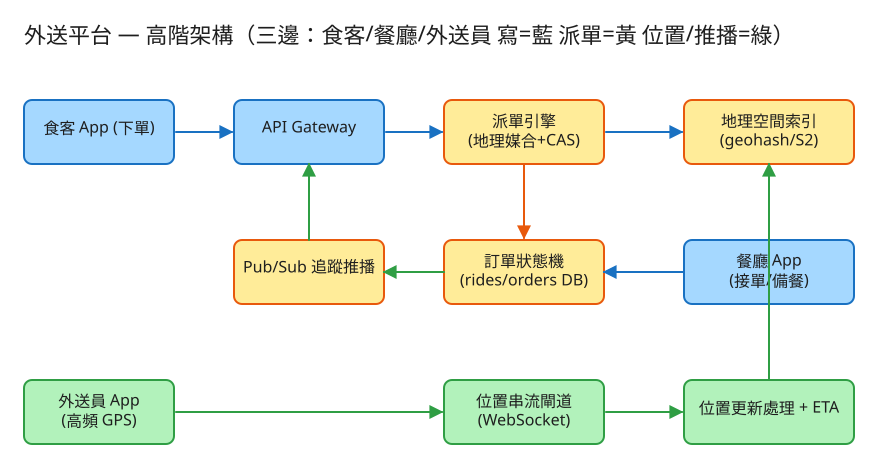

B 即時連線/同步 建議 55 分鐘 Design Food Delivery (DoorDash / Uber Eats)
| 指標 | 假設 | 推算 |
|---|---|---|
| 線上外送員 | 尖峰同時 50 萬位 | 需維持數十萬條 WebSocket 長連線 |
| 位置上報（寫） | 每位每 4 秒一次 | 50萬÷4 ≈ 12.5 萬寫 QPS（峰值更高） |
| 下單（讀+派單） | 尖峰 6000 筆/分 | ~100 派單 QPS，每筆要查附近 + 原子指派 + 算兩段 ETA |
| 外送員位置狀態 | 每筆 id+lat+lng+ts ≈ 50 bytes | 50萬×50B ≈ 25 MB（全放記憶體，如 Redis GEO） |
| 訂單（熱） | 進行中訂單同時數十萬筆 | 狀態頻繁更新 → 走支援原子更新的主庫；完成後歸檔 |
| 歷史軌跡（冷） | 每位每日約 2 萬點 × 50B | 數百 GB/日 → 走串流落地時序庫，不進熱路徑 |
# 食客下單（建立訂單，狀態 placed）
POST /api/v1/orders
Body: { "eater_id":"u1", "restaurant_id":"r88", "items":[...],
"rest":{"lat":25.0418,"lng":121.5654}, "dest":{"lat":25.048,"lng":121.570} }
→ 201 { "order_id":"o123", "status":"placed" }
# 餐廳推進狀態（接受 / 備餐完成）——狀態機轉移
POST /api/v1/orders/{id}/transition Body:{ "to":"accepted" | "preparing" }
# 派單（地理媒合 + 原子指派；通常在備餐完成附近觸發）
POST /api/v1/orders/{id}/dispatch
→ 200 { "courier":{"id":"c2","name":"Ben"}, "to_rest_km":0.02, "eta_min":14.1 }
# 外送員上報位置（高頻寫，走 WebSocket / 輕量 HTTP）
WS → { "type":"loc", "courier_id":"c2", "lat":25.043, "lng":121.566, "ts":... }
# 外送員推進狀態（取餐 / 送達）
POST /api/v1/orders/{id}/transition Body:{ "to":"picked_up" | "delivered" }
# 訂單追蹤（食客 / 餐廳 / 外送員三方訂閱，含即時 ETA）
WS subscribe order:o123 → 推送狀態變化、外送員座標、動態 ETAcouriers (外送員當前狀態，熱資料 → 記憶體 / Redis GEO)
courier_id STRING PRIMARY KEY
lat, lng DOUBLE -- 最新座標（高頻覆寫）
geohash STRING -- 由 lat/lng 算出，索引用
status ENUM(available, assigned, offline)
order_id STRING NULL -- 目前承接的訂單（assigned 時綁定）
updated_at TIMESTAMP
# 地理空間索引（非一張表，而是索引結構）
geo_index : geohash 前綴 → {courier_id...} -- Redis GEO / QuadTree / S2 cell
orders (訂單與生命週期，主庫，需強一致)
order_id, eater_id, restaurant_id, courier_id
rest_lat/lng, dest_lat/lng
status ENUM(placed, accepted, preparing, picked_up, delivered, cancelled)
distance_km (餐廳→食客), eta_min
created_at, updated_at
history [] -- 每次狀態轉移的時間戳（審計 / 客服 / 對帳）
location_history (冷，append-only → Kafka → 時序庫)
courier_id, lat, lng, ts
✏️ 用 Excalidraw 開啟編輯（diagram.excalidraw） 食客 App ──下單──▶ API GW ──▶ 派單引擎 ──查附近──▶ 地理空間索引(GeoIndex)
│ 原子指派(CAS) ▲
▼ │ 位置更新
訂單狀態機 DB ◀──接單/備餐── 餐廳 App
│ ▲
▼ │
Pub/Sub 追蹤推播 ──▶ 三方 App │
│
外送員 App ──高頻 GPS──▶ 位置串流閘道(WebSocket) ─────────┘兩張單幾乎同時要派，附近候選都包含外送員 c2。若兩個請求都讀到 c2=available 並各自指派 → 重複指派（c2 同時背兩單）。解法：
UPDATE courier SET status='assigned', order_id=:o WHERE id='c2' AND status='available'」，受影響列數 = 1 才算搶到；= 0 表示已被別張單搶走 → 換下一位候選。lock:courier:c2 用 Redis SET NX 取鎖，搶到才指派，否則跳過。即時「一單一派」最簡單，但實務常做批次撮合：每數秒收一批單，用最小成本流 / 匈牙利演算法求全域最短總路程；甚至一位外送員順路帶多單（同方向、時間窗相容才打包）。批次延遲較高但派得更省、外送員收入更高。
placed → accepted → preparing → picked_up → delivered，每步用 CAS 從合法前態轉移，亂序 / 重複會被擋下。 關鍵在派單時機：太早（剛 placed 就派）外送員到餐廳乾等備餐；太晚（餐做好才派）食客多等外送員過來。生產會用備餐時間預估模型反推「提前多久派」，讓外送員到達 ≈ 出餐完成。
派單後建立 order:{id} 頻道，外送員 GPS 上報除了更新索引，也發佈到該頻道，三方即時看到外送員移動。ETA 分兩段：取餐前 = 備餐剩餘 +（外送員→餐廳）；取餐後 =（外送員→食客）。生產走路網路由（OSRM / Valhalla）+ 即時路況，demo 用直線距離 ÷ 平均車速近似，外送員一動 ETA 就重算。
把城市切格，統計每格「下單數 / 可用外送員數」。比值高 = 供不應求 → 對該格外送費上調 / 給外送員加給，既調節需求也吸引外送員過去，使供需自平衡（與 ⑤ 的 surge 同理）。
| 階段 | 瓶頸 | 對策 |
|---|---|---|
| 單機 | 連線數 / 位置寫入 CPU | WS 閘道無狀態化 + 水平擴展，連線狀態與位置外置 Redis |
| 位置寫爆 | 12 萬+ 寫 QPS 打 DB | 當前位置只寫記憶體地理索引（覆寫），歷史走 Kafka 落地 |
| 派單競態 | 同外送員被搶 / 鎖爭用 | CAS 條件更新 + 失敗重試下一候選；鎖粒度到單一外送員 |
| 熱區供需失衡 | 用餐尖峰某商圈單多人少 | QuadTree 自適應細分 + 動態定價 / 加給引導外送員 + 排隊派發 |
| 媒合延遲 | 批次撮合算太久 / 即時挑太貪婪 | 分區並行求解、限時回退到貪婪最近、提前依備餐預估派發 |
| 跨區 / 全球 | 跨城查詢無意義且拖慢 | 以城市 / 區域為單位分區隔離；就近部署降 RTT |
本題 demo 聚焦三邊市場 + 地理派單 + CAS 原子指派 + 訂單狀態機 + 即時 ETA，而非 CRUD，可實際用 PHP 內建伺服器跑起來：
src/GeoIndex.php 以 geohash 分桶 + haversine 精算，在餐廳附近找「半徑內 / 最近 K 個可用外送員」，並可更新位置（模擬 GPS 串流）。src/Dispatcher.php 派單（候選逐一 CAS 原子指派 available→assigned，防同一外送員被派兩單）+ 訂單狀態機推進（placed→accepted→preparing→picked_up→delivered）+ 兩段 / 即時 ETA。src/Store.php 訂單 / 外送員狀態 JSON「DB」+ flock 互斥區內的條件更新（CAS）與狀態原子推進。public/index.php 路由：下單 / 外送員上線報位置 / 派最近外送員 / 推進訂單狀態 / 追蹤+ETA，並附深色測試頁。# 啟動
cd demo
php -S localhost:8057 -t public
# 瀏覽器開 http://localhost:8057：
# 1) 讓幾位外送員在不同座標上線報位置
# 2) 食客下單（填餐廳+送達座標）→ 推進 placed→accepted→preparing
# 3) 派單看媒合到哪位（最近）、距餐廳/ETA → 再派一張同餐廳的單驗證「不重複指派同一位」
# 4) 推進 picked_up→delivered（送達釋放外送員）；移動外送員位置看即時 ETA 變化SET NX，介面不變。